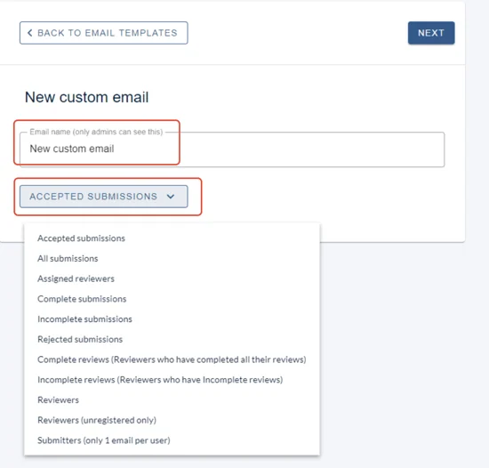
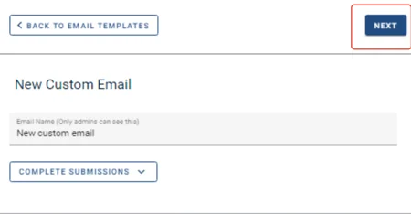
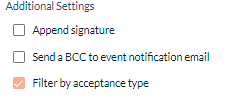
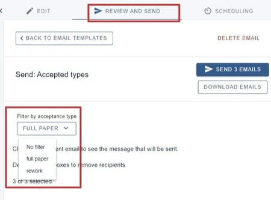
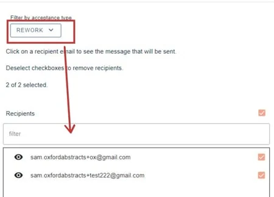
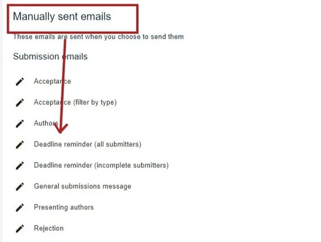
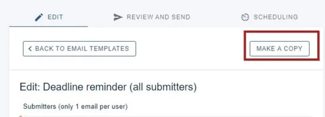
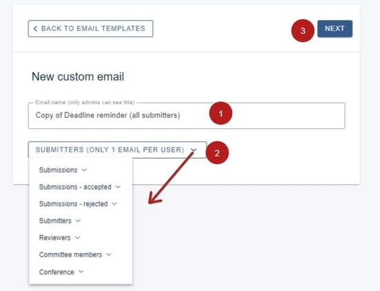
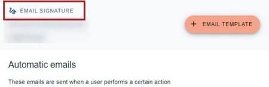
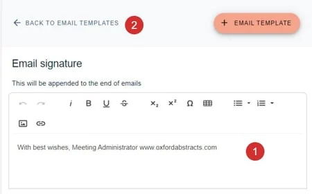

Creating custom emails
If you need a specific template that isn't included in the range of default emails, you can create your own.#
The guidance below is for event administrators/ organisers. If you are an end user (eg. submitter, reviewer, delegate etc), please click here.
There are two ways to create custom emails.
Creating a custom email from scratch
Creating a custom email from an existing template
Go to Event dashboard → Emails → Edit and send → Abstract Management
Creating a custom email from scratch
Skip to Filtering recipients by acceptance types
You will then see a list of template emails for the event. Click on +EMAIL TEMPLATE to create a new custom email.

In the New custom email screen, enter a name for the email and click the recipient group dropdown to choose your required option.

Click NEXT after entering a name and choosing a recipient group.

Follow the guidance in Amending email templates to set up your template.
You can leave the screen at any point as changes are saved automatically. You will see your new Custom Email at the bottom of the list of templates.
If you choose Accepted submissions as your recipient group, you will get the option to Filter by acceptance type.

To filter recipients by acceptance types, click on Review and send and then click on the dropdown under Filter by acceptance types.

The recipients wll be updated

Creating a custom email from an existing template
You can create copies of existing manual email templates and save them as new templates.
Click on any manual email template.

Click Make a copy

1) Enter a name for the email
2) Choose the recipient group
3) Click Next

Then follow the guidance in Amending email templates to finish setting up your template.

Common questions#
What information can I include in emails?#
How can I create an email that's not on the list of templates?#
Editing email signature#
You can create your own email signature and add it as an optional feature on each email template.#
The guidance below is for event administrators/ organisers. If you are an end user (eg. submitter, reviewer, delegate etc), please click here.
Go to Event dashboard → Emails →Edit and send → Abstract Management**
Click on Email Signature to view/edit the email signature.

You can then -
1) make any changes required to the current email signature, then
2) click Back to email templates
All changes will be saved automatically.

To add your email signature to your emails, see Amending email templates.
Did this page solve it?
Thanks — this helps us fix it.
Didn't solve it? Ask our support team
No question is too small, and there's no charge for asking. Raise a ticket and someone who knows the software will pick it up.